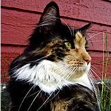

Вибриссы

Усы — волосы, растущие у человека на верхней губе. Все просто и понятно.
Иное дело кошка. У нее усы — и не усы вовсе, а, скорее, трансформированные рецепторы, органы чувств, воспринимающие малейшие изменения окружающей среды.
Вибриссы (лат. vibrissae, от vibro — колеблюсь, извиваюсь) – длинные, жесткие осязательные волосы, выступающие над шерстным покровом. Вибриссы в несколько раз длиннее и толще обычных волос. Более длинные и чувствительные находятся над верхней губой по четыре ряда с обеих сторон от носа, причем верхние два ряда могут двигаться независимо от нижних. Вибриссы покороче располагаются на щеках, на подбородке и над глазами, на щиколотках передних лап и на хвосте, есть они и между подушечками на лапах.
Основание вибрисс находится в поверхностном слое кожи. Корень каждого чувствительного усика расположен в волосяной сумке, к которой подходит множество нервных окончаний. Они-то и передают информацию об окружающей обстановке. В мозге кошки каждой вибриссе отведен свой участок. Поэтому даже незначительные колебания среды не останутся для животного незамеченными — любое прикосновение к вибриссам через окружающие их нервные окончания мгновенно посылают информацию в головной мозг.
С помощью усов кошка ориентируется в пространстве, получая информацию о преградах на своем пути по изменениям в воздушных потоках.
Кошка использует усы и для более точного измерения размеров предметов и расстояний до них. Так, прикоснувшись усами к стенкам отверстия, она мгновенно определит, достаточен ли этот лаз для ее прохождения.
Это позволяет кошке определять расположение предметов и уклоняться от препятствий даже в полной темноте. Нервные импульсы от вибриссов поступают в мозг и совместно с информацией от других органов воссоздают трехмерную картину окружающего мира.
Вибриссы незаменимы кошке при охоте. С их помощью она определяет скорость и направление ветра, чтобы совершить максимально точный прыжок. Используя усы, кошка контролирует поведение жертвы, когда держит ее в зубах.
Вибриссами на лапах кошка ощущает колебания пола, например, от движения мыши. Вибриссы-брови играют защитную роль, заставляя кошку вóвремя сомкнуть веки.
К тому же кошачьи усы являются показателем настроения животного. Так, у возбужденной или чем-либо заинтересованной кошки они широко расставлены и направлены вперед, у испуганной или агрессивной – прижаты к мордочке.